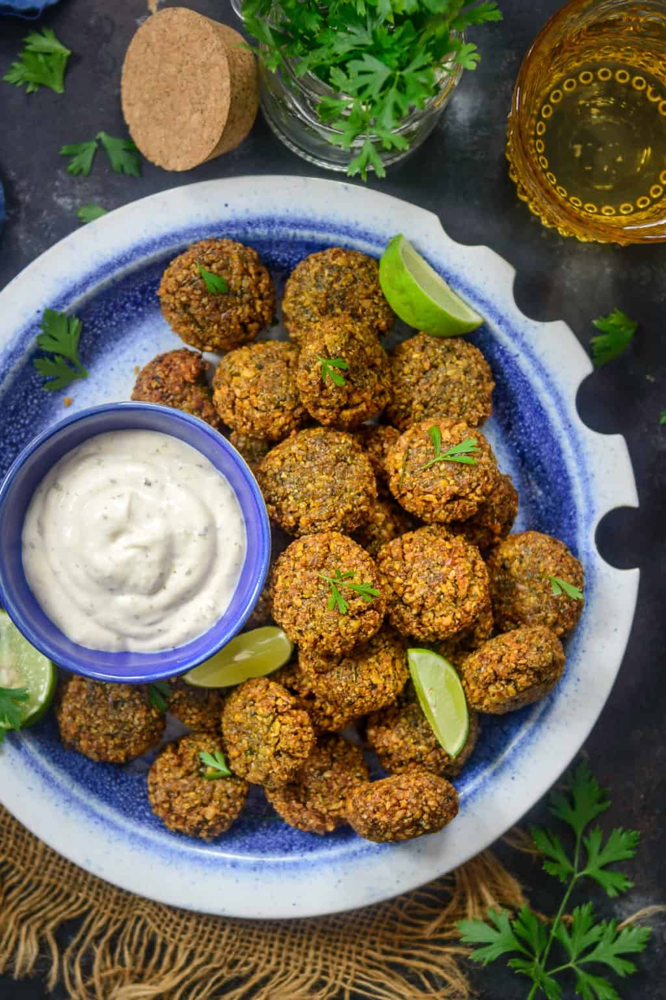

Middle Eastern Falafel Recipe

Deep fried chickpeas? Sign me up!
Falafel is a popular fried street food in parts of the Middle East,
and especially the mediterranean. There are a number of different
variations to falafel, but this is my roommate's, whose family is
from Israel. Falafel is commonly eaten with pita, fresh vegetables
such as tomato, cucumber, onion, and parsley and a white sauce
called tahini.
Ingredients:
- 2 cups dried chickpeas
- 5 stalks of cilantro
- 6 stalks of parsley
- 2 medium sized onions, peeled and cut into quarters
- 5 cloves of garlic
- 2 teaspoons of cumin
- 1 teaspoon salt
- 1/2 teaspoons of hot paprika
- 1/4 teaspoon of black pepper
- 1/2 teaspoon of baking soda
- 3 teaspoons of water
- Frying oil
Preparation/Steps:
- Place the chickpeas in a bowl, cover with water and soak for
at least 12 and up to 24 hours.
- Rinse the soaked chicpeas and grind them in a food processor
with the coriander, parsley, garlic, and onion until it
becomes a unifrom puree.
- Transfer to a bowl and add the rest of the ingredients (except the oil).
- Mix ingredients well and let sit for 20 minutes.
- Make small balls from the mixture with your hands and set aside.
- Prep your oil for deep frying and fry the balls until golden.
Remove onto paper towels and serve immediately.
Click here to go back to main recipe page.